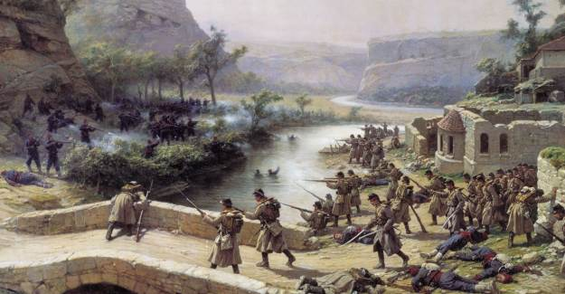

Osmanlı'da İsyanlar Kronolojik
Osmanlı Devleti Kuruluş Dönemi İsyanları
Şey Bedreddin İsyanı : I.Mehmet döneminde çıkmış isyandır. Şey Bedreddin İsyanı; İlk dini, sosyal ve siyasal ayaklanma'dır. (Şey Bedreddin görevinden alınıp sürgün edildiği için isyan etmiştir.)
Düzmece Mustafa İsyanı : I.Mehmet (Çelebi Mehmet) döneminde çıkmış isyandır. Yıldırım Beyazıtın, Timur tarafından kaçırılan oğlu olduğunu (Ankara savaşından sonra Timur tarafından semerkanta kaçırılmıştı) ve tahtta hakkı olduğunu iddaa etmiştir.
Buçuk Tepe İsyanı : II. Murat döneminde çıkmış isyandır. Buçuk Tepe İsyanı; ilk Yeniçeri ayaklanmasıdır. Buçuk Tepe İsyanı Edirnede çıkmıştır.
Şehzade Mustafa İsyanı : II.Murat döneminde çıkmış isyandır.
Düzmece Mustafa İsyanı : II.Murat döneminde tekrardan çıkmış bir isyandır.II.Murat isyanı kesin olarak bastırmıştır.
www.tarihogren.com
Osmanlı Devleti Yükselme Dönemi İsyanları
Şah Kulu İsyanı : II. Beyazıt dönemi isyanıdır. Sefevi devletinin (Şah İsmailin ) desteğiyle , Şiiliği yaymak amacıyla çıkmış bir isyandır.
Bozoklu Celal isyanı : Yavuz Sultan Selim (I. Selim) dönemi isyanıdır. Bozoklu Celal isyanı ilk çıkan Celali isyanıdır. Bu isyan Tokat civarında çıkmıştır.
Ahmet Paşa isyanı : Kanuni Sultan Süleyman (I. Süleyman) dönemi isyanıdır. Ahmet Paşa kendisi yerine İbrahim Paşanın sadrazam yapılmasından rahatsız olduğu için isyan etmiştir.
Baba Zünnün isyanı : Kanuni Sultan Süleyman (I. Süleyman) dönemi isyanıdır. Yozgat'ta çıkan bir ayaklanmadır.
Canberdi Gazali isyanı : Kanuni Sultan Süleyman (I. Süleyman) dönemi isyanıdır. Canberdi isyanı Memlük devletini yeniden kurmak amacıyl çıkmış bir isyandır. Bu isyan Mısır topraklarında çıkmıştır.
Kalender Çelebi isyanı : Kanuni Sultan Süleyman (I. Süleyman) dönemi isyanıdır. En geniş alana yayılan bir ayaklanmadır. Kalender Çelebi Tımar toprağı elinden alındığı içi isyan etmiştir.
www.tarihogren.com
Osmanlı Devleti Duraklama Dönemi İsyanları
Merkez (İstanbul) isyanları
istanbulda Yeniçeri ocağı askerleri tarafından çıkarılan isyanlardır.
Yeniçeriler yeni bir ocak kurup yeniçeri ocağını kaldırmayı isteyen II. Osmanı öldürmüşlerdir.
IV. Mehmet döneminde Yeniçeriler tekrar isyan edip rahatsız oldukları 30 devlet görevlisini çınar ağaçlarına asarak öldürmüşlerdir. Bu olay Vakayı vakvakiye (Çınar vakası) olarak anılmıştır.
Anadolu (Celali ) isyanları
Tavil Ahmet isyanı
Deli Hasan isyanı
Canbolatoğlu isyanı
Kalenderoğlu isyanı
Karayazıcı isyanı
Katırcıoğlu isyanı
Gürcü Nebi isyanı
Eyalet isyanları
Merkezden uzak vilayetlerde (Traplusgarp, Kırım, Eflak..) çıkan isyanlardır.
Sivas Beylerbeyi Vardar Ali paşanın isyanı
Erzurum Beylerbeyi Abaza Mehmet paşanın isyanı
